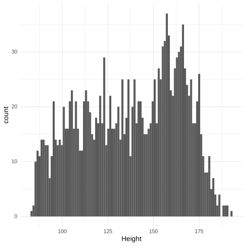
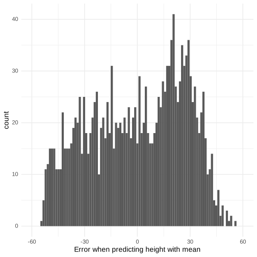
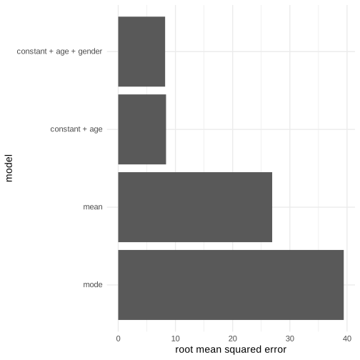
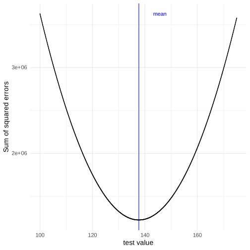
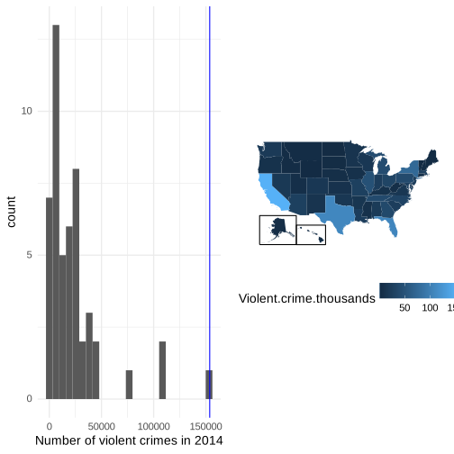
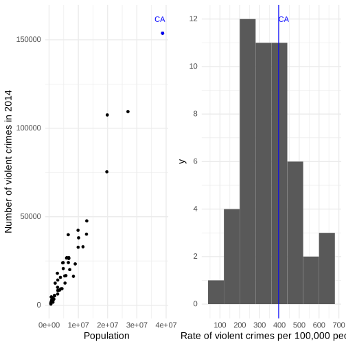
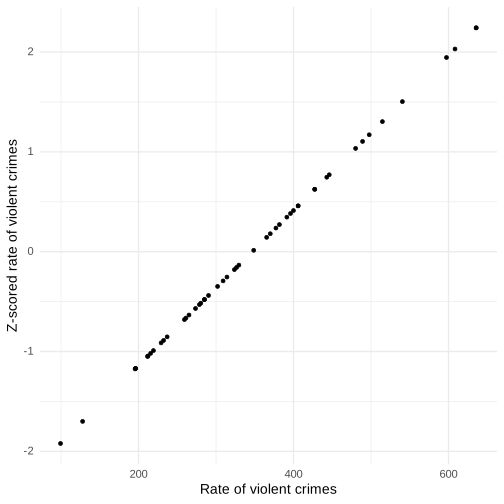
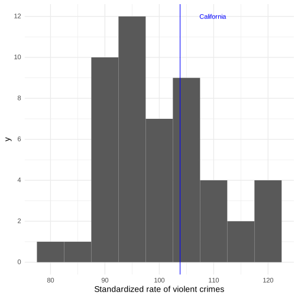
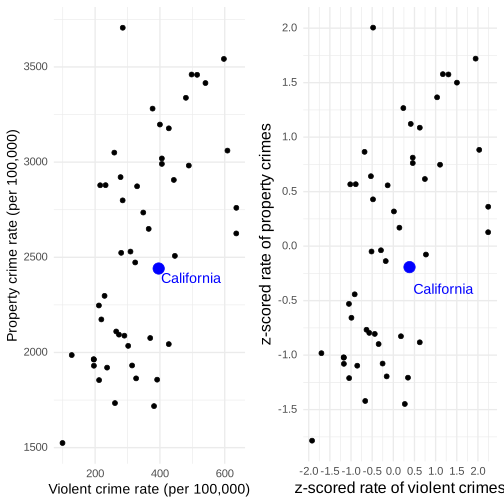
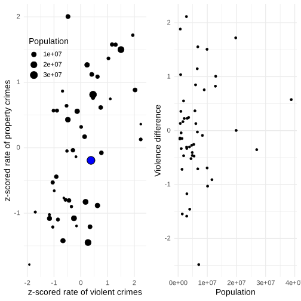

Chapter 5: Fitting models to data
Contents
Chapter 5: Fitting models to data#
library(tidyverse)
library(NHANES)
library(cowplot)
library(mapproj)
library(pander)
library(knitr)
library(modelr)
panderOptions('round',2)
panderOptions('digits',7)
theme_set(theme_minimal(base_size = 14))
options(digits = 2)
set.seed(123456) # set random seed to exactly replicate results
── Attaching packages ─────────────────────────────────────────────────────────────────────────────────────────────────────────────────────────────── tidyverse 1.3.2 ──
✔ ggplot2 3.4.1 ✔ purrr 1.0.1
✔ tibble 3.1.8 ✔ dplyr 1.1.0
✔ tidyr 1.3.0 ✔ stringr 1.5.0
✔ readr 2.1.4 ✔ forcats 1.0.0
── Conflicts ────────────────────────────────────────────────────────────────────────────────────────────────────────────────────────────────── tidyverse_conflicts() ──
✖ dplyr::filter() masks stats::filter()
✖ dplyr::lag() masks stats::lag()
Loading required package: maps
Attaching package: ‘maps’
The following object is masked from ‘package:purrr’:
map
Figure 5.1#
# drop duplicated IDs within the NHANES dataset
NHANES <-
NHANES %>%
dplyr::distinct(ID, .keep_all = TRUE)
# select the appropriate children with good height measurements
NHANES_child <-
NHANES %>%
drop_na(Height) %>%
subset(Age < 18)
NHANES_child %>%
ggplot(aes(Height)) +
geom_histogram(bins = 100)

Figure 5.2#
# compute error compared to the mean and plot histogram
error_mean <- NHANES_child$Height - mean(NHANES_child$Height)
ggplot(NULL, aes(error_mean)) +
geom_histogram(bins = 100) +
xlim(-60, 60) +
labs(
x = "Error when predicting height with mean"
)

Figure 5.3#
# compute and print RMSE for mean and mode
rmse_mean <- sqrt(mean(error_mean**2))
# from https://www.tutorialspoint.com/r/r_mean_median_mode.htm
getmode <- function(v) {
uniqv <- unique(v)
uniqv[which.max(tabulate(match(v, uniqv)))]
}
error_mode <- NHANES_child$Height - getmode(NHANES_child$Height)
rmse_mode <- sqrt(mean(error_mode**2))
p1 <- NHANES_child %>%
ggplot(aes(x = Age, y = Height)) +
geom_point(position = "jitter",size=0.05) +
scale_x_continuous(breaks = seq.int(0, 20, 2)) +
ggtitle('A: original data')
lmResultHeightOnly <- lm(Height ~ Age + 0, data=NHANES_child)
rmse_heightOnly <- sqrt(mean(lmResultHeightOnly$residuals**2))
p2 <- NHANES_child %>%
ggplot(aes(x = Age, y = Height)) +
geom_point(position = "jitter",size=0.05) +
scale_x_continuous(breaks = seq.int(0, 20, 2)) +
annotate('segment',x=0,xend=max(NHANES_child$Age),
y=0,yend=max(lmResultHeightOnly$fitted.values),
color='blue',lwd=1) +
ggtitle('B: age')
p3 <- NHANES_child %>%
ggplot(aes(x = Age, y = Height)) +
geom_point(position = "jitter",size=0.05) +
scale_x_continuous(breaks = seq.int(0, 20, 2)) +
geom_smooth(method='lm',se=FALSE) +
ggtitle('C: age + constant')
p4 <- NHANES_child %>%
ggplot(aes(x = Age, y = Height)) +
geom_point(aes(colour = factor(Gender)),
position = "jitter",
alpha = 0.8,
size=0.05) +
geom_smooth(method='lm',aes(group = factor(Gender),
colour = factor(Gender))) +
theme(legend.position = c(0.25,0.8)) +
ggtitle('D: age + constant + gender')
plot_grid(p1,p2,p3,p4,ncol=2)
`geom_smooth()` using formula = 'y ~ x'
`geom_smooth()` using formula = 'y ~ x'

Figure 5.4#
# find the best fitting model to predict height given age
model_age <- lm(Height ~ Age, data = NHANES_child)
# the add_predictions() function uses the fitted model to add the predicted values for each person to our dataset
NHANES_child <-
NHANES_child %>%
add_predictions(model_age, var = "predicted_age") %>%
mutate(
error_age = Height - predicted_age #calculate each individual's difference from the predicted value
)
rmse_age <-
NHANES_child %>%
summarise(
sqrt(mean((error_age)**2)) #calculate the root mean squared error
) %>%
pull()
# compute model fit for modeling with age and gender
model_age_gender <- lm(Height ~ Age + Gender, data = NHANES_child)
rmse_age_gender <-
NHANES_child %>%
add_predictions(model_age_gender, var = "predicted_age_gender") %>%
summarise(
sqrt(mean((Height - predicted_age_gender)**2))
) %>%
pull()
error_df <- #build a dataframe using the function tribble()
tribble(
~model, ~error,
"mode", rmse_mode,
"mean", rmse_mean,
"constant + age", rmse_age,
"constant + age + gender", rmse_age_gender
) %>%
mutate(
RMSE = error
)
error_df %>%
ggplot(aes(x = model, y = RMSE)) +
geom_col() +
scale_x_discrete(limits = c("mode", "mean", "constant + age", "constant + age + gender")) +
labs(
y = "root mean squared error"
) +
coord_flip()

Figure 5.5#
dataDf <-
tibble(
BAC = runif(100) * 0.3,
ReactionTime = BAC * 1 + 1 + rnorm(100) * 0.01
)
p1 <- dataDf %>%
ggplot(aes(x = BAC, y = ReactionTime)) +
geom_point() +
geom_smooth(method = "lm", se = FALSE) +
ggtitle('A: linear, low noise')
# noisy version
dataDf <-
tibble(
BAC = runif(100) * 0.3,
ReactionTime = BAC * 2 + 1 + rnorm(100) * 0.2
)
p2 <- dataDf %>%
ggplot(aes(x = BAC, y = ReactionTime)) +
geom_point() +
geom_smooth(method = "lm", se = FALSE) +
ggtitle('B: linear, high noise')
# nonlinear (inverted-U) function
dataDf <-
dataDf %>%
mutate(
caffeineLevel = runif(100) * 10,
caffeineLevelInvertedU = (caffeineLevel - mean(caffeineLevel))**2,
testPerformance = -1 * caffeineLevelInvertedU + rnorm(100) * 0.5
)
p3 <- dataDf %>%
ggplot(aes(x = caffeineLevel, y = testPerformance)) +
geom_point() +
geom_smooth(method = "lm", se = FALSE) +
ggtitle('C: nonlinear')
plot_grid(p1,p2,p3)
`geom_smooth()` using formula = 'y ~ x'
`geom_smooth()` using formula = 'y ~ x'
`geom_smooth()` using formula = 'y ~ x'
Figure 5.6#
#parameters for simulation
set.seed(1122)
sampleSize <- 16
#build a dataframe of simulated data
simData <-
tibble(
X = rnorm(sampleSize),
Y = X + rnorm(sampleSize, sd = 1),
Ynew = X + rnorm(sampleSize, sd = 1)
)
#fit models to these data
simpleModel <- lm(Y ~ X, data = simData)
complexModel <- lm(Y ~ poly(X, 8), data = simData)
#calculate root mean squared error for "current" dataset
rmse_simple <- sqrt(mean(simpleModel$residuals**2))
rmse_complex <- sqrt(mean(complexModel$residuals**2))
#calculate root mean squared error for "new" dataset
rmse_prediction_simple <- sqrt(mean((simpleModel$fitted.values - simData$Ynew)**2))
rmse_prediction_complex <- sqrt(mean((complexModel$fitted.values - simData$Ynew)**2))
#visualize
plot_original_data <-
simData %>%
ggplot(aes(X, Y)) +
geom_point() +
geom_smooth(
method = "lm",
formula = y ~ poly(x, 8),
color = "red",
se = FALSE
) +
geom_smooth(
method = "lm",
color = "blue",
se = FALSE
) +
ylim(-3, 3) +
annotate(
"text",
x = -1.25,
y = 2.5,
label = sprintf("RMSE=%0.1f", rmse_simple),
color = "blue",
hjust = 0,
cex = 4
) +
annotate(
"text",
x = -1.25,
y = 2,
label = sprintf("RMSE=%0.1f", rmse_complex),
color = "red",
hjust = 0,
cex = 4
) +
ggtitle("original data")
plot_new_data <-
simData %>%
ggplot(aes(X, Ynew)) +
geom_point() +
geom_smooth(
aes(X, Y),
method = "lm",
formula = y ~ poly(x, 8),
color = "red",
se = FALSE
) +
geom_smooth(
aes(X, Y),
method = "lm",
color = "blue",
se = FALSE
) +
ylim(-3, 3) +
annotate(
"text",
x = -1.25,
y = 2.5,
label = sprintf("RMSE=%0.1f", rmse_prediction_simple),
color = "blue",
hjust = 0,
cex = 4
) +
annotate(
"text",
x = -1.25,
y = 2,
label = sprintf("RMSE=%0.1f", rmse_prediction_complex),
color = "red",
hjust = 0,
cex = 4
) +
ggtitle("new data")
plot_grid(plot_original_data, plot_new_data)
`geom_smooth()` using formula = 'y ~ x'
`geom_smooth()` using formula = 'y ~ x'
Warning message:
“Removed 2 rows containing missing values (`geom_point()`).”
Figure 5.7#
df_error <-
tibble(
val = seq(100, 175, 0.05),
sse = NA
)
for (i in 1:dim(df_error)[1]) {
err <- NHANES_child$Height - df_error$val[i]
df_error$sse[i] <- sum(err**2)
}
df_error %>%
ggplot(aes(val, sse)) +
geom_vline(xintercept = mean(NHANES_child$Height), color = "blue") +
geom_point(size = 0.1) +
annotate(
"text",
x = mean(NHANES_child$Height) + 8,
y = max(df_error$sse),
label = "mean",
color = "blue"
) +
labs(
x = "test value",
y = "Sum of squared errors"
)

Table 5.1#
# create income data frame
incomeDf <-
tibble(
income = c(48000, 64000, 58000, 72000, 66000),
person = c("Joe", "Karen", "Mark", "Andrea", "Pat")
)
kable(incomeDf, caption='Income for our five bar patrons')
Table: Income for our five bar patrons
| income|person |
|------:|:------|
| 48000|Joe |
| 64000|Karen |
| 58000|Mark |
| 72000|Andrea |
| 66000|Pat |
Table 5.2#
# add Beyonce to income data frame
incomeDf <-
incomeDf %>%
rbind(c(54000000, "Beyonce")) %>%
mutate(income = as.double(income))
kable(incomeDf %>% mutate(income=format(income, scientific=FALSE)), caption='Income for our five bar patrons plus Beyoncé Knowles.')
Table: Income for our five bar patrons plus Beyoncé Knowles.
|income |person |
|:--------|:-------|
|48000 |Joe |
|64000 |Karen |
|58000 |Mark |
|72000 |Andrea |
|66000 |Pat |
|54000000 |Beyonce |
Table 5.3#
# compare variance estimates using N or N-1 in denominator
population_variance <-
NHANES_child %>%
summarize(
var(Height)
) %>%
pull()
# take 100 samples and estimate the sample variance using both N or N-1 in the demoninator
sampsize <- 50
nsamp <- 10000
varhat_n <- array(data = NA, dim = nsamp)
varhat_nm1 <- array(data = NA, dim = nsamp)
for (i in 1:nsamp) {
samp <- sample_n(NHANES_child, 1000)[1:sampsize, ]
sampmean <- mean(samp$Height)
sse <- sum((samp$Height - sampmean)**2)
varhat_n[i] <- sse / sampsize
varhat_nm1[i] <- sse / (sampsize - 1)
}
summary_df <- data.frame(Estimate=c("Population variance",
"Variance estimate using n",
"Variance estimate using n-1"),
Value=c(population_variance,
mean(varhat_n),
mean(varhat_nm1)))
kable(summary_df, digits=1, caption='Variance estimates using n versus n-1; the estimate using n-1 is closer to the population value')
Table: Variance estimates using n versus n-1; the estimate using n-1 is closer to the population value
|Estimate | Value|
|:---------------------------|-----:|
|Population variance | 725|
|Variance estimate using n | 710|
|Variance estimate using n-1 | 725|
Figure 5.8#
crimeData <-
read.table(
"https://raw.githubusercontent.com/statsthinking21/statsthinking21-figures-data/main/CrimeOneYearofData_clean.csv",
header = TRUE,
sep = ","
)
# let's drop DC since it is so small
crimeData <-
crimeData %>%
dplyr::filter(State != "District of Columbia")
caCrimeData <-
crimeData %>%
dplyr::filter(State == "California")
p1 <- crimeData %>%
ggplot(aes(Violent.crime.total)) +
geom_histogram(bins = 25) +
geom_vline(xintercept = caCrimeData$Violent.crime.total, color = "blue") +
xlab("Number of violent crimes in 2014")
library(mapproj)
library(fiftystater)
data("fifty_states") # this line is optional due to lazy data loading
crimeData <-
crimeData %>%
mutate(StateLower = tolower(State),
Violent.crime.thousands=Violent.crime.total/1000)
# map_id creates the aesthetic mapping to the state name column in your data
plot_map <-
ggplot(crimeData, aes(map_id = StateLower)) +
# map points to the fifty_states shape data
geom_map(aes(fill = Violent.crime.thousands), map = fifty_states) +
scale_x_continuous(breaks = NULL) +
scale_y_continuous(breaks = NULL) +
theme(
legend.position = "bottom",
panel.background = element_blank()
) +
coord_map() +
expand_limits(x = fifty_states$long, y = fifty_states$lat) +
labs(
x = "",
y = ""
)
# add border boxes to AK/HI
p2 <- plot_map + fifty_states_inset_boxes()
plot_grid(p1,p2)

Figure 5.9#
p1 <- crimeData %>%
ggplot(aes(Population, Violent.crime.total)) +
geom_point() +
annotate(
"point",
x = caCrimeData$Population,
y = caCrimeData$Violent.crime.total,
color = "blue"
) +
annotate(
"text",
x = caCrimeData$Population - 1000000,
y = caCrimeData$Violent.crime.total + 8000,
label = "CA",
color = "blue"
) +
ylab("Number of violent crimes in 2014")
p2 <- crimeData %>%
ggplot(aes(Violent.Crime.rate)) +
geom_histogram(binwidth = 80) +
geom_vline(xintercept = caCrimeData$Violent.Crime.rate, color = "blue") +
annotate(
"text",
x = caCrimeData$Violent.Crime.rate+25,
y = 12,
label = "CA",
color = "blue"
) +
scale_x_continuous(breaks = seq.int(0, 700, 100)) +
scale_y_continuous(breaks = seq.int(0, 13, 2)) +
xlab("Rate of violent crimes per 100,000 people")
plot_grid(p1,p2)

Figure 5.10#
crimeData <-
crimeData %>%
mutate(
ViolentCrimeRateZscore =
(Violent.Crime.rate - mean(Violent.Crime.rate)) /
sd(crimeData$Violent.Crime.rate)
)
caCrimeData <-
crimeData %>%
dplyr::filter(State == "California")
crimeData %>%
ggplot(aes(Violent.Crime.rate, ViolentCrimeRateZscore)) +
geom_point() +
labs(
x = "Rate of violent crimes",
y = "Z-scored rate of violent crimes"
)

Figure 5.11#
plot_map_z <-
ggplot(crimeData, aes(map_id = StateLower)) +
# map points to the fifty_states shape data
geom_map(aes(fill = ViolentCrimeRateZscore), map = fifty_states) +
expand_limits(x = fifty_states$long, y = fifty_states$lat) +
scale_x_continuous(breaks = NULL) +
scale_y_continuous(breaks = NULL) +
theme(
legend.position = "bottom",
panel.background = element_blank()
) +
coord_map() +
expand_limits(x = fifty_states$long, y = fifty_states$lat) +
labs(x = "", y = "")
# add border boxes to AK/HI
plot_map_z + fifty_states_inset_boxes()
Figure 5.12#
# First, create a function to generate plots of the density and CDF
dnormfun <- function(x) {
return(dnorm(x, 248))
}
plot_density_and_cdf <-
function(zcut, zmin = -4, zmax = 4, plot_cdf = TRUE, zmean = 0, zsd = 1) {
zmin <- zmin * zsd + zmean
zmax <- zmax * zsd + zmean
x <- seq(zmin, zmax, 0.1 * zsd)
zdist <- dnorm(x, mean = zmean, sd = zsd)
area <- pnorm(zcut) - pnorm(-zcut)
p2 <-
tibble(
zdist = zdist,
x = x
) %>%
ggplot(aes(x, zdist)) +
geom_line(
aes(x, zdist),
color = "red",
size = 2
) +
stat_function(
fun = dnorm, args = list(mean = zmean, sd = zsd),
xlim = c(zmean - zcut * zsd, zmean + zsd * zcut),
geom = "area", fill = "orange"
) +
stat_function(
fun = dnorm, args = list(mean = zmean, sd = zsd),
xlim = c(zmin, zmean - zcut * zsd),
geom = "area", fill = "green"
) +
stat_function(
fun = dnorm, args = list(mean = zmean, sd = zsd),
xlim = c(zmean + zcut * zsd, zmax),
geom = "area", fill = "green"
) +
annotate(
"text",
x = zmean,
y = dnorm(zmean, mean = zmean, sd = zsd) / 2,
label = sprintf("%0.1f%%", area * 100)
) +
annotate(
"text",
x = zmean - zsd * zcut - 0.5 * zsd,
y = dnorm(zmean - zcut * zsd, mean = zmean, sd = zsd) + 0.01 / zsd,
label = sprintf("%0.1f%%", pnorm(zmean - zsd * zcut, mean = zmean, sd = zsd) * 100)
) +
annotate(
"text",
x = zmean + zsd * zcut + 0.5 * zsd,
y = dnorm(zmean - zcut * zsd, mean = zmean, sd = zsd) + 0.01 / zsd,
label = sprintf("%0.1f%%", (1 - pnorm(zmean + zsd * zcut, mean = zmean, sd = zsd)) * 100)
) +
xlim(zmin, zmax) +
labs(
x = "Z score",
y = "density"
)
cdf2 <-
tibble(
zdist = zdist,
x = x,
zcdf = pnorm(x, mean = zmean, sd = zsd)
) %>%
ggplot(aes(x, zcdf)) +
geom_line() +
annotate(
"segment",
x = zmin,
xend = zmean + zsd * zcut,
y = pnorm(zmean + zsd * zcut, mean = zmean, sd = zsd),
yend = pnorm(zmean + zsd * zcut, mean = zmean, sd = zsd),
color = "red",
linetype = "dashed"
) +
annotate(
"segment",
x = zmean + zsd * zcut,
xend = zmean + zsd * zcut,
y = 0, yend = pnorm(zmean + zsd * zcut, mean = zmean, sd = zsd),
color = "red",
linetype = "dashed"
) +
annotate(
"segment",
x = zmin,
xend = zmean - zcut * zsd,
y = pnorm(zmean - zcut * zsd, mean = zmean, sd = zsd),
yend = pnorm(zmean - zcut * zsd, mean = zmean, sd = zsd),
color = "blue",
linetype = "dashed"
) +
annotate(
"segment",
x = zmean - zcut * zsd,
xend = zmean - zcut * zsd,
y = 0,
yend = pnorm(zmean - zcut * zsd, mean = zmean, sd = zsd),
color = "blue",
linetype = "dashed"
) +
ylab("Cumulative density")
return(list(pdf=p2, cdf=cdf2))
}
plots1 = plot_density_and_cdf(1)
plots2 = plot_density_and_cdf(2)
plot_grid(plots1$pdf, plots2$pdf, plots1$cdf, plots2$cdf, nrow=2, ncol=2)
Warning message:
“Using `size` aesthetic for lines was deprecated in ggplot2 3.4.0.
ℹ Please use `linewidth` instead.”
Figure 5.13#
crimeData <-
crimeData %>%
mutate(
ViolentCrimeRateStdScore = (ViolentCrimeRateZscore) * 10 + 100
)
caCrimeData <-
crimeData %>%
filter(State == "California")
crimeData %>%
ggplot(aes(ViolentCrimeRateStdScore)) +
geom_histogram(binwidth = 5) +
geom_vline(xintercept = caCrimeData$ViolentCrimeRateStdScore, color = "blue") +
scale_y_continuous(breaks = seq.int(0, 13, 2)) +
annotate(
"text",
x = caCrimeData$ViolentCrimeRateStdScore + 6,
y = 12,
label = "California",
color = "blue"
) +
labs(
x = "Standardized rate of violent crimes"
)

Figure 5.14#
p1 <- crimeData %>%
ggplot(aes(Violent.Crime.rate, Property.crime.rate)) +
geom_point(size = 2) +
annotate(
"point",
x = caCrimeData$Violent.Crime.rate,
y = caCrimeData$Property.crime.rate,
color = "blue",
size = 5
) +
annotate(
"text",
x = caCrimeData$Violent.Crime.rate + 100,
y = caCrimeData$Property.crime.rate - 50,
label = "California",
color = "blue",
size = 5
) +
labs(
x = "Violent crime rate (per 100,000)",
y = "Property crime rate (per 100,000)"
)
# plot z scores
crimeData <-
crimeData %>%
mutate(
PropertyCrimeRateZscore =
(Property.crime.rate - mean(Property.crime.rate)) /
sd(Property.crime.rate)
)
caCrimeData <-
crimeData %>%
dplyr::filter(State == "California")
p2 <- crimeData %>%
ggplot(aes(ViolentCrimeRateZscore, PropertyCrimeRateZscore)) +
geom_point(size = 2) +
scale_y_continuous(breaks = seq.int(-2, 2, .5)) +
scale_x_continuous(breaks = seq.int(-2, 2, .5)) +
annotate(
"point",
x = caCrimeData$ViolentCrimeRateZscore,
y = caCrimeData$PropertyCrimeRateZscore,
color = "blue", size = 5
) +
annotate(
"text",
x = caCrimeData$ViolentCrimeRateZscore + 0.8,
y = caCrimeData$PropertyCrimeRateZscore - 0.2,
label = "California",
color = "blue",
size = 5
) +
theme(
axis.title = element_text(size = 16)
) +
labs(
x = "z-scored rate of violent crimes",
y = "z-scored rate of property crimes"
)
plot_grid(p1,p2)

Figure 5.15#
p1 <- crimeData %>%
ggplot(aes(ViolentCrimeRateZscore, PropertyCrimeRateZscore)) +
geom_point(aes(size = Population)) +
annotate(
"point",
x = caCrimeData$ViolentCrimeRateZscore,
y = caCrimeData$PropertyCrimeRateZscore,
color = "blue",
size = 5
) +
labs(
x = "z-scored rate of violent crimes",
y = "z-scored rate of property crimes"
) +
theme(legend.position = c(0.2,0.8))
crimeData <- crimeData %>%
mutate(
ViolenceDiff = ViolentCrimeRateZscore - PropertyCrimeRateZscore
)
p2 <- crimeData %>%
ggplot(aes(Population, ViolenceDiff)) +
geom_point() +
ylab("Violence difference")
plot_grid(p1,p2)
